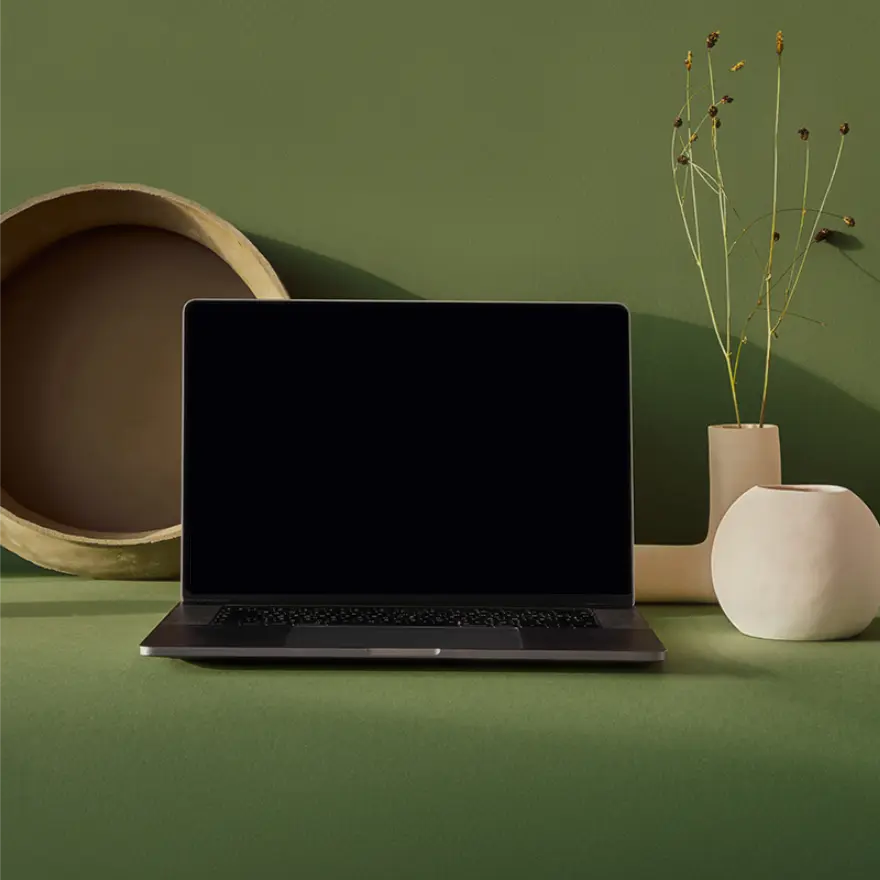

MENU
Web
UX
Animation
Redesign
Portfolio
OM MIG
P O R T F O L I O
af Sofie Hemmingsen
TEMA 2 - Grundlæggende web
TEMA 3 - Grundlæggende UX
TEMA 4 - Grundlæggende animation
TEMA 5 - Grundlæggende indhold
TEMA 6 - Portfoliowebsite
OM MIG
